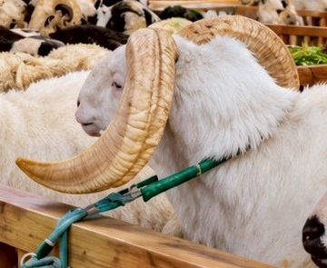
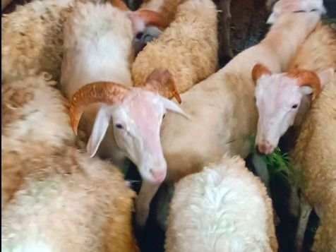
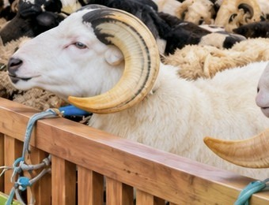
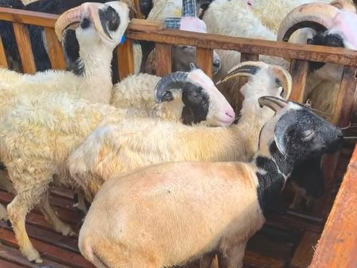
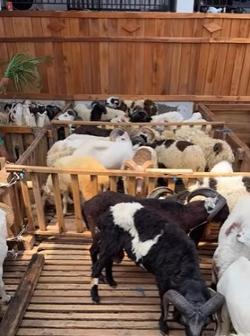
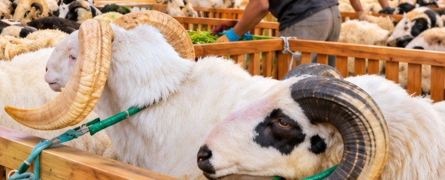
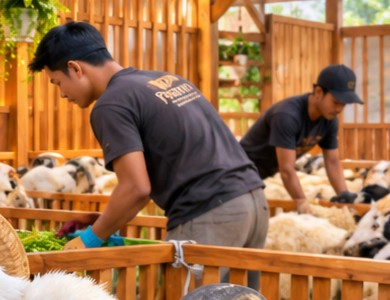
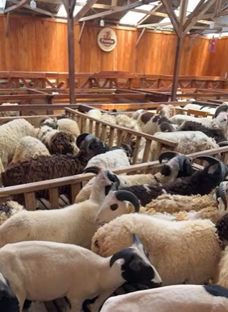

Domba Garut
Domba lokal khas Jawa Barat dengan tanduk melingkar besar pada jantan. Postur gagah dan banyak dicari.
Tanya stok →Pesona Domba Nusantara (PDN) adalah usaha peternakan dan perdagangan domba yang berbasis di Parongpong, Bandung Barat. Kami melayani peternak, pedagang, reseller, hingga konsumen individu, dengan pembelian partai kecil maupun besar.
Untuk konsumsi, usaha penggemukan, hingga stok pedagang. Tanyakan ketersediaan, bobot, dan harga terbaru lewat WhatsApp.

Domba lokal khas Jawa Barat dengan tanduk melingkar besar pada jantan. Postur gagah dan banyak dicari.
Tanya stok →
Domba lokal Priangan yang adaptif dan mudah dipelihara, cocok untuk berbagai kebutuhan.
Tanya stok →

Stok dan harga berubah setiap minggu. Minta foto atau video domba terbaru sebelum membeli.
Dari kebutuhan aqiqah keluarga sampai pengadaan instansi dan program pemerintah, dengan pelayanan teratur dan informasi transparan.
Pasokan domba dalam jumlah besar untuk kementerian, instansi, BUMN, dan perusahaan.
Konsultasi →Mendukung program ketahanan pangan dan bantuan ternak bagi kelompok tani dan peternak.
Konsultasi →Indukan dan pejantan untuk usaha pembibitan, kelompok ternak, dan koperasi.
Konsultasi →Pasokan domba potong dan daging secara rutin untuk rumah makan, katering, dan hotel.
Konsultasi →Domba sehat dan cukup umur untuk aqiqah, dengan pilihan bobot sesuai kebutuhan.
Konsultasi →Domba kurban sehat dan cukup umur, untuk perorangan maupun panitia masjid.
Lihat paket masjid →Beli satuan untuk kebutuhan pribadi, atau kerja sama pasokan untuk pedagang dan reseller.
Konsultasi →Bandung Raya, Jabodetabek, dan luar Jawa.*
Konsultasi →*Pengiriman sesuai ketentuan penjual. Tanyakan ongkos dan jadwal kirim.
Tidak perlu bingung memilih satu per satu. Pilih paket sesuai skala usahamu, kami bantu siapkan indukan dan pejantannya.
Untuk yang baru mulai beternak di lahan pekarangan.
Untuk peternak yang ingin populasi berkembang lebih cepat.
Untuk usaha ternak skala kecil, kelompok tani, atau koperasi.
Jumlah, jenis domba, dan rasio betina-pejantan disesuaikan dengan rencana usahamu.
Komposisi paket dapat disesuaikan. Harga mengikuti jenis, umur, dan bobot domba saat pemesanan. *Ongkos kirim menyesuaikan lokasi.
Panitia cukup sebut jumlah pekurban. Kami bantu pilih domba, tandai nama pekurbannya, dan kirim ke masjid sesuai jadwal.
Untuk musala atau panitia kurban lingkungan RT/RW.
Untuk masjid jami dengan jumlah pekurban sedang.
Untuk masjid besar, yayasan, sekolah, atau perkantoran.
Untuk kurban kolektif, lembaga zakat, perusahaan, atau instansi pemerintah.
Pesan lebih awal agar pilihan domba lebih banyak. Pembayaran bisa dengan uang muka. *Titip rawat, jadwal, dan ongkos kirim menyesuaikan kesepakatan dan lokasi.
Kirim pesan WhatsApp: jenis domba, jumlah, dan kebutuhanmu.
Terima foto atau video stok terbaru, atau datang langsung ke kandang.
Harga, pembayaran, dan pengiriman disepakati dengan jelas di awal.
Domba dikirim ke alamatmu atau diambil langsung di lokasi.
Begini kondisi kandang dan domba kami sehari-hari di Parongpong, Bandung Barat.




Harga domba Garut mengikuti umur, bobot, dan kualitas tanduk. Karena stok berganti setiap minggu, harga terbaru kami kirim lewat WhatsApp lengkap dengan foto atau video dombanya.
Ada. Untuk kebutuhan konsumsi, usaha kuliner, atau penggemukan, tersedia domba pedaging dan domba bakalan dengan harga bersahabat. Semua domba dicek kesehatannya sebelum dijual.
Ya. Kami melayani pengadaan domba partai besar untuk kementerian, dinas, BUMN, perusahaan, dan program pemerintah, lengkap dengan surat penawaran harga dan pengiriman terjadwal.
Bisa. Tersedia paket domba kurban masjid mulai 5 ekor sampai kolektif 50 ekor lebih, dengan label nama pekurban per ekor dan pengiriman ke masjid menjelang hari raya.
Tersedia domba aqiqah jantan maupun betina yang cukup umur dan sehat. Sebutkan tanggal acara dan jumlah ekor saat memesan lewat WhatsApp.
Paket Pemula 10 ekor (9 betina dan 1 pejantan) cocok untuk mulai beternak di lahan pekarangan. Tersedia juga paket 20, 50, dan 100 ekor lebih.
Kandang kami berada di Kp. Kebon Hui, Desa Cigugur Girang, Kecamatan Parongpong, Kabupaten Bandung Barat. Kami mengirim ke Bandung Raya, Jabodetabek, hingga luar Jawa dengan ongkos kirim menyesuaikan lokasi.
Lihat dan pilih domba secara langsung. Kabari kami lewat WhatsApp sebelum berkunjung.